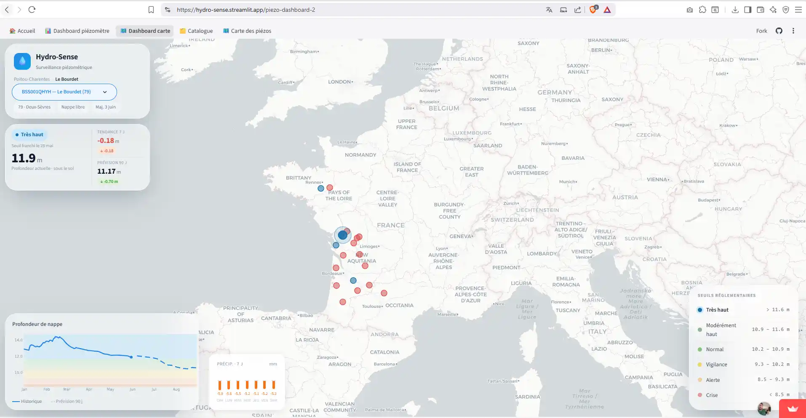

HydroSense — Prévision des nappes phréatiques
Outil de suivi et de prévision des niveaux piézométriques en France. Séries temporelles par station (base ADES), modélisation prédictive à horizon 90 jours (Darts, Prophet), classification réglementaire automatique. Pipeline de données et API conteneurisée sur Google Cloud, tableau de bord cartographique (Streamlit).
Python
Scikit-Learn
Darts
Prophet
FastAPI
Docker
Google Cloud
Streamlit